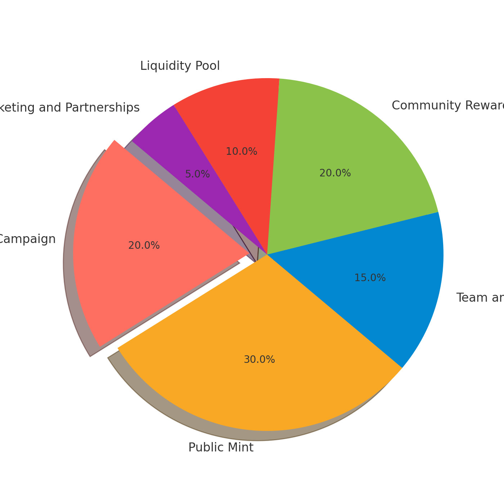

Welcome to the **$DANIML Tokenomics** page! Here’s everything you need to know about how **$DANIML** tokens fuel the wild, unstoppable energy of our ecosystem. Let’s break it down.
Token Name: $DANIML (Degenerate Animal)
Total Supply: 1,000,000 tokens — a limited supply designed to maintain exclusivity.
Network: Base (and a future leap to Solana for greater scalability).
Airdrop: Join the wild pack early! Supporters who get in on the ground floor will be rewarded with **$DANIML** tokens. Participants who sign up for the airdrop will likely receive enough tokens to claim a couple of NFTs as part of the promotion.
NFT Minting: Mint your very own **exclusive** $DANIML NFTs using **$DANIML tokens**. Holders get early access to collectibles tied to the heart of the **DANIML** project.
Mint Cost: Each mint will cost **20 $DANIML tokens** (price in USD is subject to market conditions at launch).
Phase 1: Jump in early with our **Airdrop** and exclusive **NFT Minting**.
Phase 2: Once the public mint opens, you can join in with **ETH** as the minting currency, with additional $DANIML rewards for ETH minters.
Airdrop Campaign: 20% (200,000 tokens) — For the early believers.
Public Mint: 30% (300,000 tokens) — Available to the public for minting and trading.
Team and Founders: 15% (150,000 tokens) — Reserved for the driving force behind **$DANIML**.
Community Rewards and Engagement: 20% (200,000 tokens) — Fueling the community, encouraging engagement, and rewarding contributions.
Liquidity Pool: 10% (100,000 tokens) — Ensuring liquidity for decentralized exchanges (DEXs) and centralized platforms.
Marketing and Partnerships: 5% (50,000 tokens) — To amplify **$DANIML** far and wide.
When you mint **NFTs** or participate in the public mint, here’s where the minted tokens go:
Mint Burn / Fees: A portion of tokens will be burned or collected as fees, with a part of these fees going to stakers.
Airdrop: Don’t miss out! Join our Telegram, follow us on Twitter, and submit your wallet/email to claim your share of **$DANIML** and likely receive a couple of free NFTs as part of the promotion.
Minting: Public mint is just around the corner. Be ready to grab yours once Phase 2 starts, with a mint cost of **20 $DANIML tokens** (roughly $5 at launch).